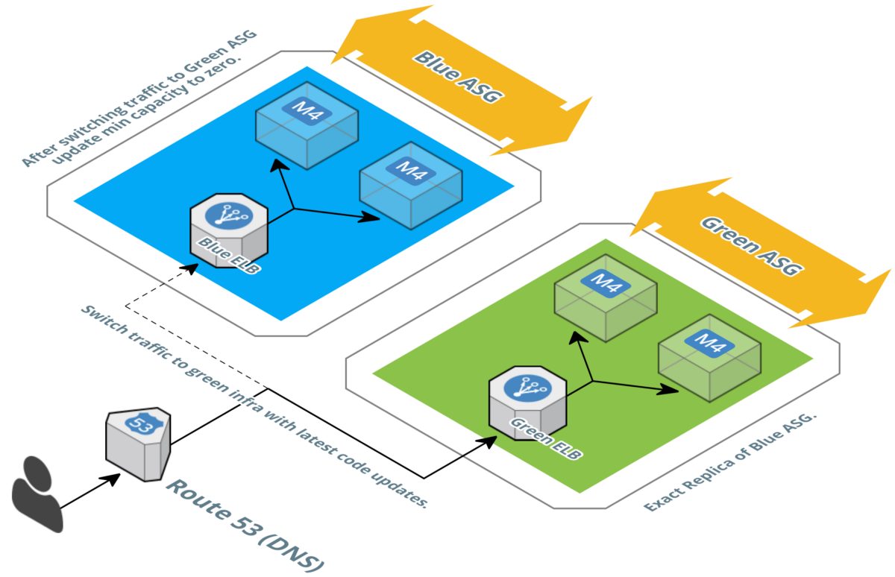
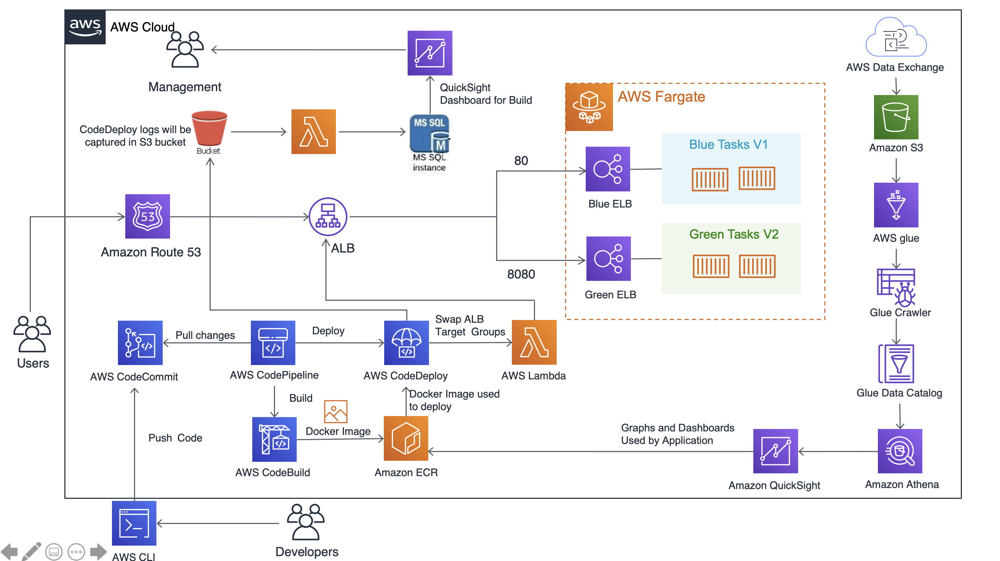
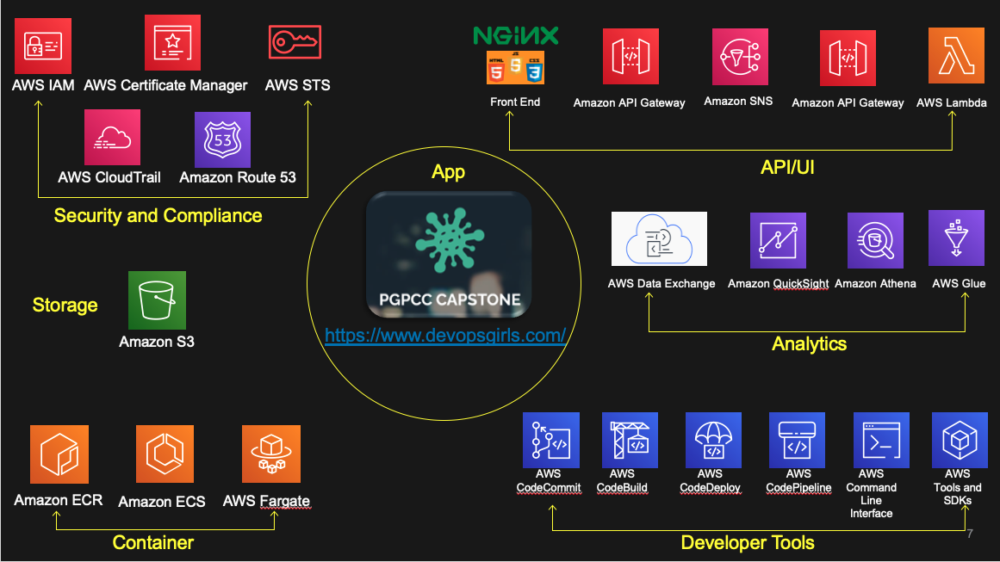

Introduction
Continuous integration (CI) and continuous delivery (CD) are vital practices in modern software development. They streamline the delivery of software to deliver business value quickly. Along with rapid delivery, current business environment also demands near zero down time for their apps.
Blue/green deployments provide near zero-downtime release and rollback capabilities. The fundamental idea behind blue/green deployment is to shift traffic between two identical environments that are running different versions of your application. The blue environment represents the current application version serving production traffic. In parallel, the green environment is staged running a different version of your application. After the green environment is ready and tested, production traffic is redirected from blue to green. If any problems are identified, you can roll back by reverting traffic back to the blue environment. Canary release is a variation of the technique where traffic is moved over to green version slowly over time.
Objective
In today’s competitive world, where client is considered as God and has lots of choices around the ease of use of application adding new features in the existing application is a mandatory requirement. The uberization of apps needs Continuous Integration and Continuous deployment of new features, quicker time to market and seamless fallback mechanism. As a result of such a demanding nature of today’s market the blue/green deployment has become a savior for application developers.
In this model the application developers start by deploying the new version of the software to a subset of client’s infrastructure, to which limited numbers of users are routed. Based on the feedback from them and testing of the environment reliability the larger sets of users are migrated to the newer environment and the old environment is ripped apart. The major benefit of blue/green deployment is in simple rollouts, quick rollbacks, and easy disaster recovery.
Solution architechture
Following is the architechture created for the project using AWS Services

AWS Services used
Following AWS Services used for this capstone project

DETAILS:
Aws Data Exchange
AWS Data Exchange makes it easy to find, subscribe to, and use third-party data in the cloud. Once subscribed to a data product, you can use the AWS Data Exchange API to load data directly into Amazon S3 and then analyze it with a wide variety of AWS analytics services.
AWS S3
Amazon Simple Storage Service (Amazon S3) is an object storage service that offers industry-leading scalability, data availability, security, and performance. Amazon S3 provides easy-to-use management features so you can organize your data and configure finely-tuned access controls to meet your specific business, organizational, and compliance requirements.
AWS glue
AWS Glue is a fully managed extract, transform, and load (ETL) service that makes it easy for customers to prepare and load their data for analytics. You can create and run an ETL job with a few clicks in the AWS Management Console.
Amazon Athena
Amazon Athena is a service that enables a data analyst to perform interactive queries in the Amazon Web Services public cloud on data stored in Amazon Simple Storage Service (S3). Because Athena is a serverless query service, an analyst doesn't need to manage any underlying compute infrastructure to use it.
Amazon QuickSight
Amazon QuickSight is a fast, cloud-powered business intelligence service that makes it easy to deliver insights to everyone in your organization. As a fully managed service, QuickSight lets you easily create and publish interactive dashboards that include ML Insights. Dashboards can then be accessed from any device, and embedded into your applications, portals, and websites.
AWS CodeCommit
AWS CodeCommit is a fully-managed source control service that hosts secure Git-based repositories. It makes it easy for teams to collaborate on code in a secure and highly scalable ecosystem. CodeCommit eliminates the need to operate your own source control system or worry about scaling its infrastructure. We have used it as code repository for our Covid data application.
AWS CodeBuild
AWS CodeBuild is a fully managed continuous integration service that compiles source code, runs tests, and produces software packages that are ready to deploy. With CodeBuild, there is no need to provision, manage, and scale your own build servers. We have used CodeBuild in our project to build the Covid data application. We have created buildspec.yml for our application specific build instructions for this.
AWS CodeDeploy
AWS CodeDeploy is a fully managed deployment service that automates software deployments to a variety of compute services such as Amazon EC2, AWS Fargate, AWS Lambda, and on-premises servers. AWS CodeDeploy makes it easier to rapidly release new features, helps to avoid downtime during application deployment, and handles the complexity of updating your applications. AWS CodeDeploy can be used to automate software deployments, eliminating the need for error-prone manual operations. The service scales to match your deployment needs We have used the deploy the docker image to ECS fargate.
AWS CodePipeline
AWS CodePipeline is a workflow management tool that allows users to construct and manage a process whereby their code can be built, tested and deployed into either a test and/or production environment. When problems occur with any step in the process, the pipeline is halted, thereby ensuring that preventable bugs and errors are not automatically deployed into your environment. We have created the “Source-Build-deploy” pipeline using this service.
AWS Fargate
AWS Fargate is a serverless compute engine for containers that works with both Amazon Elastic Container Service (ECS) and Amazon Elastic Kubernetes Service (EKS). Fargate makes it easy for you to focus on building your applications. Fargate removes the need to provision and manage servers, lets you specify and pay for resources per application, and improves security through application isolation by design. We are using ECS Fargate to deploy blue/green task groups.
Amazon Route 53
Amazon Route 53 is a highly available and scalable cloud Domain Name System (DNS) web service. It is designed to give developers and businesses an extremely reliable and cost-effective way to route end users to Internet applications by translating names like www.example.com into the numeric IP addresses like 192.0.2.1 that computers use to connect to each other. Amazon Route 53 is fully compliant with IPv6 as well. We are using Route 53 domain service to route our traffic to a URL
AWS Lambda
AWS Lambda let us run code without provisioning or managing servers. We pay only for the compute time we consume. We have used lambda function to swap the urls for blue/green environment.